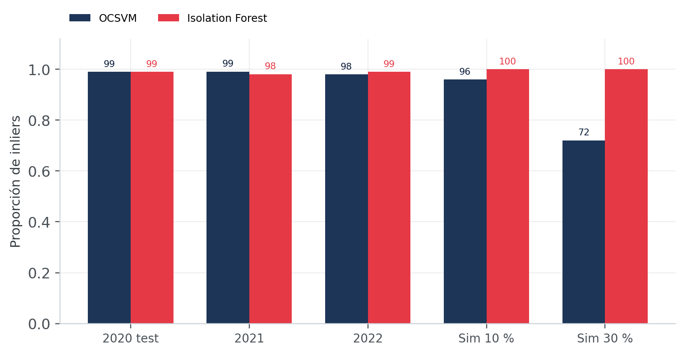
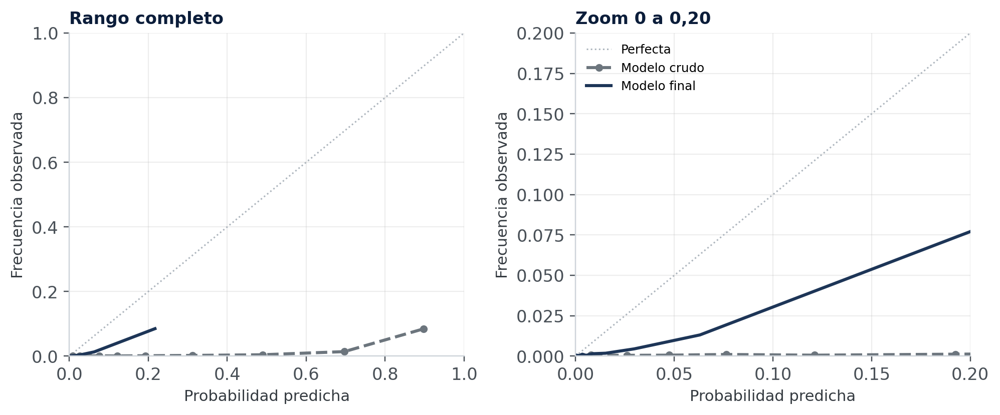
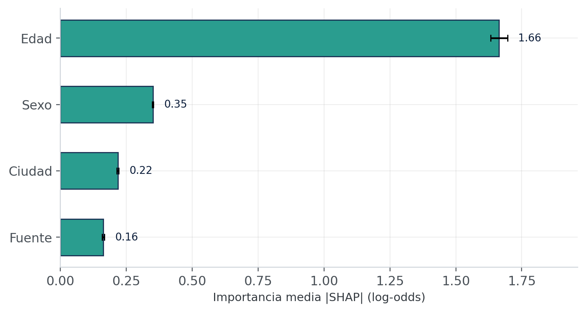
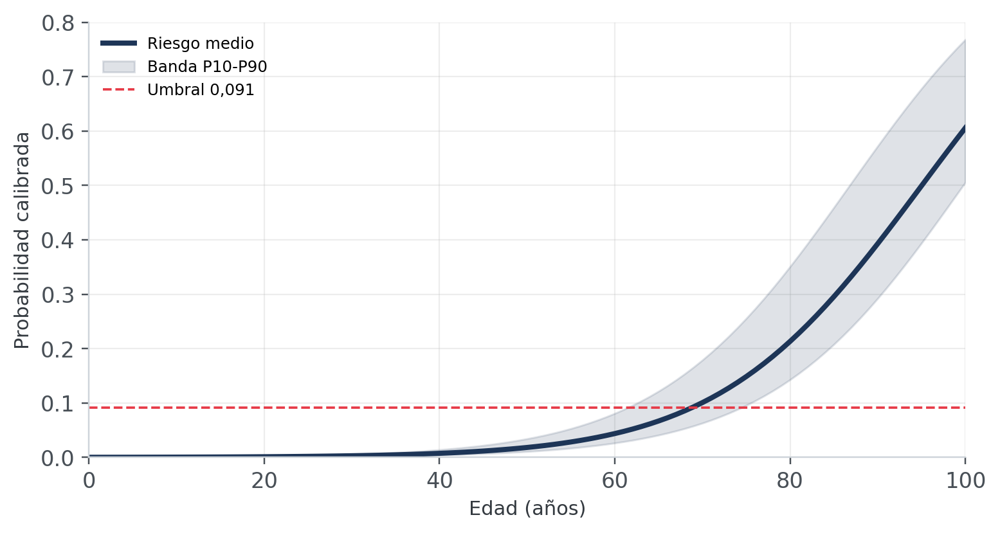
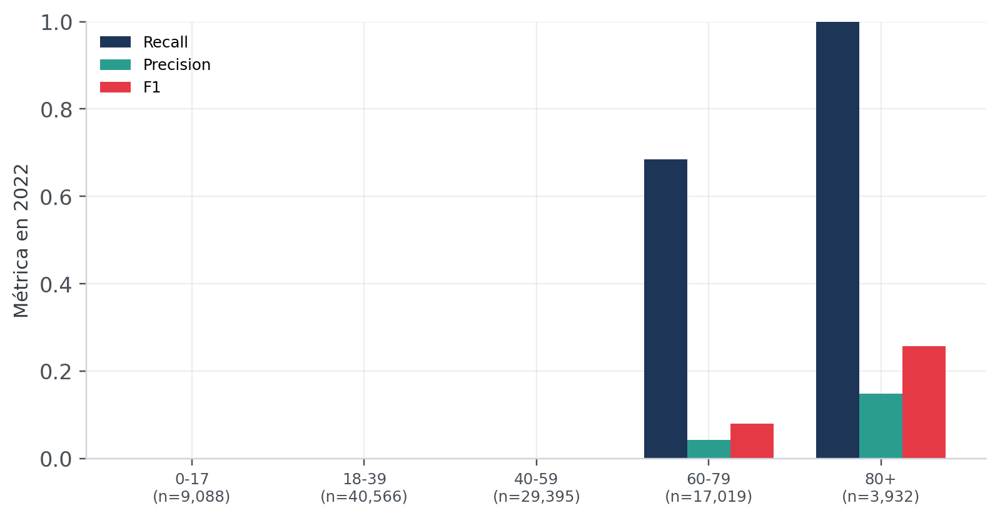
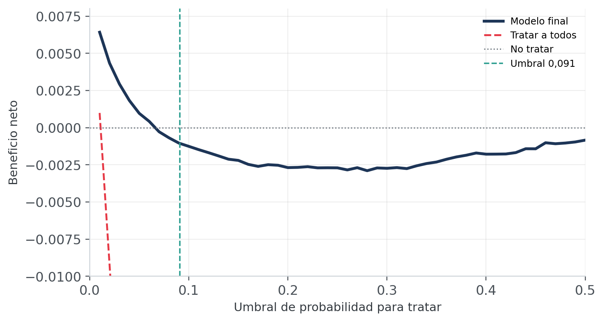
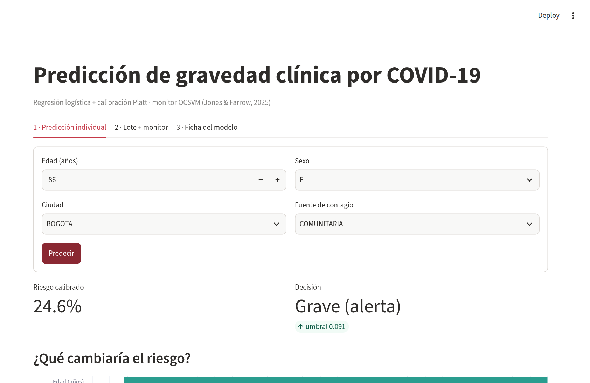

Detección de population drift en la predicción de gravedad clínica de COVID-19
Del monitor OCSVM al modelo calibrado y desplegado
Ailyn Sofía Gómez Rodríguez · Juan Tomás Rincón Pinzón Docente: Wilmer Darío Pineda Ríos · Universidad Externado de Colombia · 2026
0,190AUC-PR 2022
99 %inliers OCSVM
300kcasos analizados
01 / El problema
Cambió la población o cambió el riesgo
P(X): covariables
Quién llega: edad, sexo, ciudad, fuente de contagio.
P(Y|X): relación
Qué tan grave se pone un paciente con ese perfil.
P(Y): prevalencia
Qué proporción de los casos termina en gravedad.
En Colombia, P(X) se mantuvo estable. La prevalencia cayó de 2,82 % a 1,10 % y también cambió P(Y|X).
02 / Artículo base
El OCSVM aprende el soporte de P(X)
Jones & Farrow (2025), Scientific Reports. One-class SVM for detecting population drift in deployed ML medical diagnostics.
OCSVM con kernel RBF y ν = 0,01 entrenado con Wisconsin Breast Cancer. Si un caso cae fuera del soporte aprendido, se marca como posible drift.
Cómo funciona
P(X) de referencia → frontera de decisión
Inlier dentro del soporte
Outlier posible cambio poblacional
No usa Y: no ve P(Y) ni P(Y|X). Es un monitor, no un diagnóstico.
03 / Datos
6,39 millones de casos del INS
6,39 Mregistros crudos del INS
6,31 Mdespués de depurar nulos y 2020-2022
300kmuestra final: 100k por ola
20202,82 %
20212,33 %
20221,10 %
Prevalencia de gravedad por ola. La caída explica por qué las métricas tradicionales empeoran en 2022.
Variables del modelo
edadsexociudadfuente de contagio
Objetivo: grave. Se excluyó tipo de atención por fuga de información.
04 / Protocolo
Entrenar, calibrar, evaluar
1
2020 entrena
100.000 casos. Variante ancestral y población sin vacunación.
2
2021 calibra
20.000 casos holdout. Ajuste de Platt y umbral.
3
2022 evalúa
100.000 casos. Ómicron y vacunación. Fuera del entrenamiento.
Pipeline sin fuga
StandardScalerOneHotEncoderLogisticRegression
Las transformaciones se ajustan solo con el train de cada partición. El test se usa una vez. 2022 no es ciego: ya se observó en la fase 2.
05 / Réplica del OCSVM
El monitor funciona, pero vigila P(X)

Qué muestra
En 2020-2022, entre 98 % y 99 % de inliers.
Sim 30 %: OCSVM 72 %, Isolation Forest 100 %.
P(X) estable no significa que el clasificador siga funcionando. El monitor certifica la entrada, pero no explica la caída del clasificador.
06 / Modelo final
Reentreno + Platt, umbral 0,0909
0,190AUC-PR en 2022
0,923ROC-AUC
0,0119Brier
0,0238ECE
0,147F1 con umbral 0,091
0,786recall con umbral 0,091
Entrenamiento y calibración
2020 completo + 80 % de 2021: 180.000 casos.
Platt sobre el 20 % restante de 2021: 20.000 casos.
Umbral de decisión
t* = 1 / (1 + 10) = 0,0909
Costo FN/FP = 10: el falso negativo pesa diez veces más.
Mejor AUC-PR y F1 que las alternativas; el bootstrap confirma la mejora. No es un salto grande: el valor está en la consistencia y la calibración.
07 / Calibración
El modelo crudo no se puede leer como riesgo

0,287media cruda en 2022
0,011prevalencia real
Platt: Brier 0,0126, ECE 0,025.
EM falló en 2021 y 2022.
Brier skill -0,098: el modelo ordena bien, pero no promete riesgo absoluto exacto. El valor está en el ranking y la decisión.
08 / Interpretabilidad
La edad manda


Edad: 1,66 |SHAP|, 4,7× la siguiente. Umbral a los ~69 años; 0,213 a los 80. El modelo es casi un score etario: las demás variables ajustan, no cambian la historia.
09 / Errores y utilidad
Un modelo etario


Recall 0 en <60; 0,684 en 60-79; 1,000 en 80+. Triage para mayores de 60, no tamizaje. La limitación principal es no detectar jóvenes; con 0,05 el beneficio neto es positivo.
10 / Despliegue
Streamlit + Docker

Predicción individual
Riesgo, advertencia por edad, umbral y explicación.
Lote + monitor
CSV, métricas y monitor OCSVM.
Ficha del modelo
Métricas, SHAP y limitaciones.
healthcheckparidad 0,0AppTest OK
Misma predicción en host y contenedor: 24,6 % para 86 años. Es un prototipo funcional, no un sistema clínico listo para producción.
11 / Cierre
Vigilar las covariables no basta
Limitaciones
2022 no es un test ciego.
Faltan comorbilidades, vacunación y variante.
Modelo etario y Brier skill negativo.
Proyección
Holdout temporal ciego.
Más covariables y modelos no lineales calibrados.
Monitoreo de P(Y|X) y MLOps.
El OCSVM vigila P(X). El cambio que importaba estaba en P(Y) y P(Y|X). Un monitor de entrada no reemplaza la calibración supervisada.